Abstract
This article presents ethnographic fieldnotes from Exit Gate 4 of Vishwavidyalaya metro station, recorded during fieldwork in January 2020 and read alongside return observations made in the same area in June 2026. The fieldnotes capture a small vignette of the ordinary everyday outside a typical metro station in Delhi. The article attends to three registers of this everyday: soundscapes shaped by weather and the rhythm of metro arrivals; social encounters across class and gender; and the ‘tapri’, or roadside tea stall, as a vibrant, democratic space of urban sociality. Reading the 2020 vignettes against the site’s subsequent architectural reorganisation, the article suggests that some of its sonic and social patterns persist, and are displaced rather than deleted. Though a situated record of one threshold among many in Delhi, the notes show how much of the city’s everyday life is carried by the accumulated moments of an ordinary morning – a shout, a glance, an encounter, an exchange, and how these adapt when the space around them is redesigned.
Keywords
Introduction
The metro station, in dominant urban policy discourse, is infrastructure – a node of connectivity, a symbol of world-class modernity, a green-certified testament to India’s urban ambition. This article proposes a different entry point: the exit gate, the approximately 50-metre threshold between the metro’s surveilled interior and the city outside, as a site where Delhi’s ordinary urban life can be observed as it is negotiated. Here commuters step out of a regulated, ticketed space into one where rickshaw drivers, vendors, alms-seekers and stray animals are also present, and where the terms of sharing the pavement are worked out through unspoken, collective norms without signage. The choice of site follows Robinson’s (2006) call to read cities as ordinary, not as approximations of a global model. The redevelopment at Gate 4 also belongs to a longer pattern in Delhi, where ‘world-class’ aesthetics have been used to justify clearing informal uses from public space (Ghertner, 2015).
Drawing on fieldnotes recorded at Exit Gate 4 of Vishwavidyalaya metro station in 2020, I document the threshold’s soundscapes, its vibrant encounters, and its democratic ‘tapris’. I then return to the same gate in 2026, after its redevelopment, asking not whether the exit gate has changed – it visibly has – but whether the social and sonic patterns first recorded there have disappeared, or been relocated.
Methodology – Collection, Selection and Processing of Field Data
This article draws on ethnographic fieldnotes collected through participant observation at Exit Gate 4 of Vishwavidyalaya metro station on Tuesday, 21 January 2020, during peak office hours (11 a.m.–1 p.m.), when I was a master’s student conducting fieldwork for my dissertation. I carried out this observation as a witnessing, embodied presence rather than a detached recorder, attending simultaneously to the visual, sonic, and affective registers of the threshold space (Emerson, Fretz and Shaw, 2011). Notes were handwritten in real time, capturing encounters, soundscapes, spatial arrangements, and the rhythms of arrival and departure in the form of ethnographic vignettes – brief, sensory-dense descriptions that preserve the texture of ordinary urban moments without reducing them to abstraction. Informal conversations with vendors, commuters, and stall workers supplemented these observations. Data selection followed a thematic logic of sounds, encounters and social spaces – ‘tapris’/stalls. This thematic classification highlights the article’s core concerns: class interdependency, gendered negotiation, the sonic production of space, and the informal economy outside the metro exit gate.
The 2026 material is of a different order. I am now a doctoral researcher at the same university and have continued to commute daily through this gate since the campus reopened after the pandemic closures. These observations are extensive but unsystematic: they draw on years of everyday proximity to the site, and on two deliberate return visits on 11 June 2026 from 11 a.m. to 1 p.m. and 24 June 2026 from 1 p.m. to 3 p.m., during which I took notes and photographed the altered layout. Unlike the 2020 fieldwork, they were not recorded to a fixed protocol, and they are offered as a situated update rather than an equivalent second dataset or a structured longitudinal comparison. Photographs from both periods were selected to show differences in the site’s layout and the subsequent encounters described; faces have been blurred and no names were recorded. The June 2026 visits fell in the university’s summer break, when fewer students than usual pass through; daily term-time commuting covers this gap.
Weather and Sonic Pulse of the City in 2020
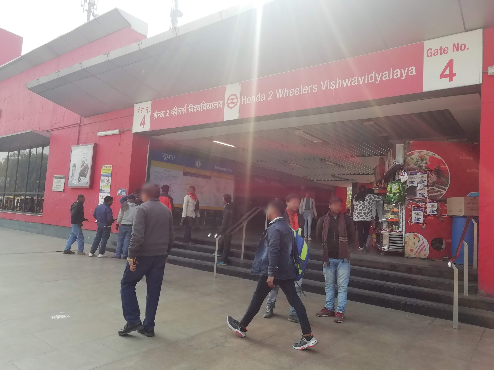
At 11:00 a.m. on a Tuesday, Exit Gate 4 (Figure 1) was unusually quiet. Early morning rain had cleared the threshold. The usual press of bodies, the shouting, the jostling of e-rickshaws competing for the commuter’s first glance had all retreated. What remained was a wet pavement, a few pigeons, and a sound that only reveals itself when the city’s noise cover is lifted: the low, insistent hum of the metro infrastructure itself.
As it rained, I sat on one of the tea stall’s benches just outside the exit gate, sheltered under its tarpaulin and positioned to see the whole lane. On most mornings these benches were full; the rain had emptied them. As a master’s student without a research grant, this spot – at a station named Vishwavidyalaya, Hindi for ‘university’, for its proximity to Delhi University’s North Campus – was both affordable and thematically rich: within a small radius I could observe students, professors, administrative staff, informal workers and alms-seekers, and formal and informal work going on side by side.
At 11:10, as the rain subsided, a train arrived, signalled by a rush of exiting feet. The first sound to rise above them was the voices of the e-rickshaw drivers, with their rickshaws parked in a row in front of the exit (Figure 2-2), calling out college names:
"…Daulat Ram, Miranda, Hindu, Hansraj, Ramjas, Stephens…"
Each driver was calling out destinations and searching for a passenger who would look his way (Figure 2-1). The shouting aligned with the roughly five-minute rhythm of metro arrivals, loudest as each train emptied and falling away in the gap between. Within a few trains I could anticipate the next surge from the drivers’ movements before I heard the train.
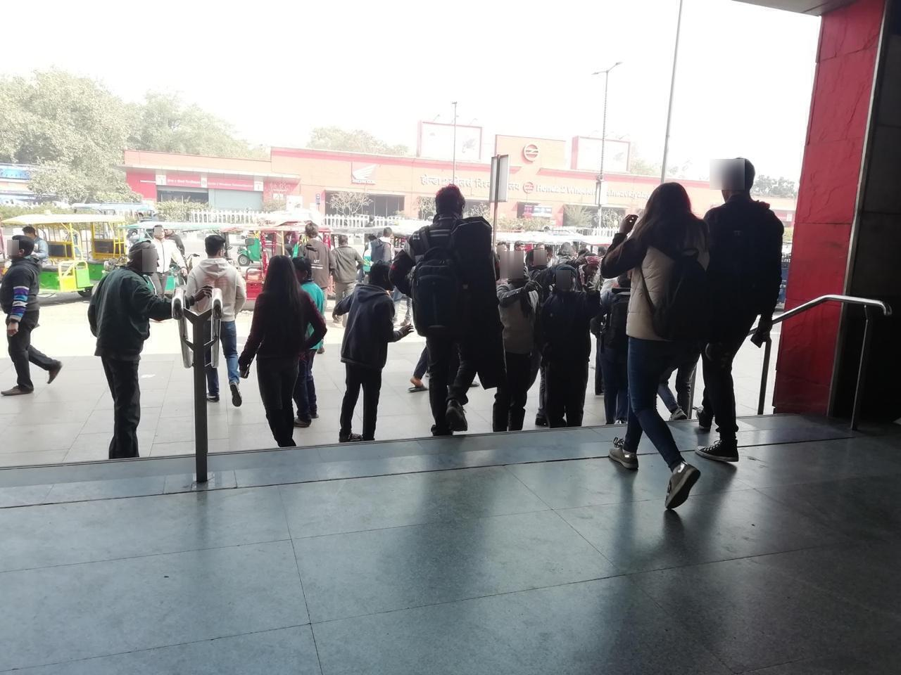
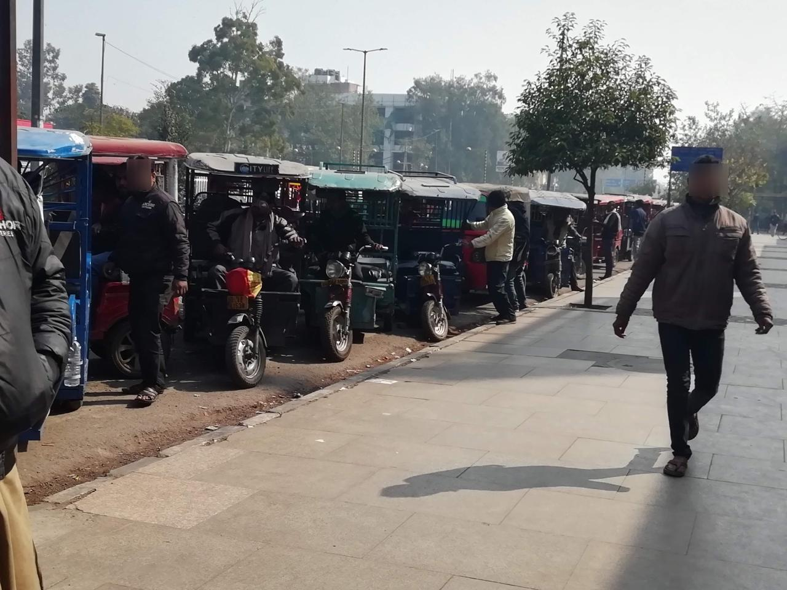
In the gaps, the drivers leaned against their vehicles, joking, swatting at each other for having snatched a fare, laughing. This talk was quieter and passed between the drivers rather than towards commuters, among men who evidently saw each other every day. ‘Clamour at cusp,’ I had written in my notebook. ‘Jokes in gap hour. Tired laughter.’
As the morning wore on, sounds layered: rushing footsteps, someone on the phone, two students talking in low voices, an argument arriving already mid-sentence. Beneath these ran the calls of stall owners and of children accompanying their mothers as they asked for alms near the exit – calls that continued through the gaps between trains, when the drivers fell quiet. Behind everything, horns from the bus stand across the crossing came in surges timed to the traffic signal.
With the crowd thinned by the rain, the order in these sounds was easier to hear: they followed the metro timetable, the weather, and the habits of the people who gather here each morning. In this instance, at least, weather appeared less a backdrop than one of the threshold’s organising rhythms. I recorded these sounds not as atmosphere but because they showed, in part, who calls out and who is called to at the gate, and whose work depends on being heard.
Encounters in 2020: Negotiating Class and Gender Outside the Exit Gate
In the half-hour between eleven and half past, several kinds of encounter overlapped at the gate. The most persistent was the daily meeting between e-rickshaw drivers and metro passengers – informal transport workers and the urban working middle class, each dependent on the other: cheap, flexible transport against the day’s fare. Some drivers touched the commuters’ arms or bags to draw attention; I did not see anyone object.
As the next train arrived, I moved to photograph the scene and drew a knot of drivers guessing which college I belonged to:
“…Madam, Miranda, Miranda…”
They were naming the women’s college in the campus, and so reading my gender as well as my likely destination. Only after I repeated, three times, that I was not leaving the station did they move on.
Once the rain stopped, I moved from the bench to a low concrete ledge opposite the tea stall, with my notebook open. I carried no institutional marker beyond my appearance – a young woman with a college backpack, writing, in an area full of university students on a weekday. A girl walked out of the gate with earphones in; two friends stepped out from behind a pillar to surprise her, and she shrieked and laughed as they embraced. Not long after, another girl approached me, alone and slightly hesitant:
“…Excuse me. Do you have any idea where to go for correction of details in my UG degree? I am from South Campus, so not so familiar…”
I could not help her; she left with a polite smile. She had read me as someone who belonged to the university – which I did – but not as someone observing her. My notebook, backpack and location shaped who approached me, and so what I was able to see.
Near the sandwich and tea stall just inside the gate, two women in security uniform talked through a break about duty hours and shift work. When a woman asking for food approached, both drew back and turned away. Nearby, three of the four male customers stayed on their phones; only the fourth spoke with the shopkeeper. The cluster resembled the coexistence of physical proximity and individual preoccupation discussed by Pani (2020): people physically together but largely attending to themselves.
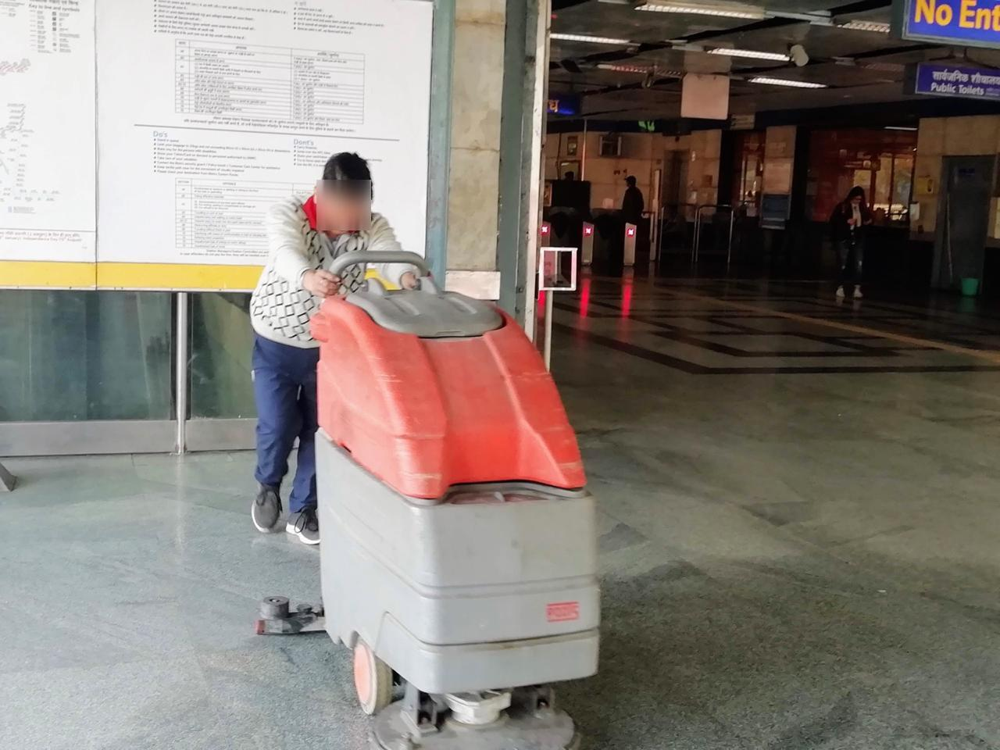
At 11:30, a cleaner came out to the gate’s edge (Figure 3), walked towards a corner where a street dog lay asleep, and shooed it away with a wave of his hand. The dog left; the cleaner continued. The exchange took four seconds. Several people asking for alms were nearby at the time and were not moved on. One instance cannot establish a rule, but the exit gate resonated with the understanding of stations as liminal borderlands discussed by Haynes (2025), where anxieties about order are managed by removing what does not fit the image of the commuter-citizen.
Near the hour’s end, a couple sat on a slab eating from a tiffin. A woman approached and asked for a chapati (Figure 4); the woman in the couple gave her one without hesitation – the only time that morning I saw food given without hesitation to someone asking for it. She then turned to me and asked, in Hindi, for chickpeas to eat with it:
“…Didi, chhole dila do, roti ke saath…”
(Sister, buy me chickpeas to eat with the chapati.)
I bought her some from the chhole-kulche (bread-chickpea) stall beside the momo stalls. As with the drivers, my appearance had marked me as someone likely to pay. I was not a neutral observer of these transactions but a participant in them.
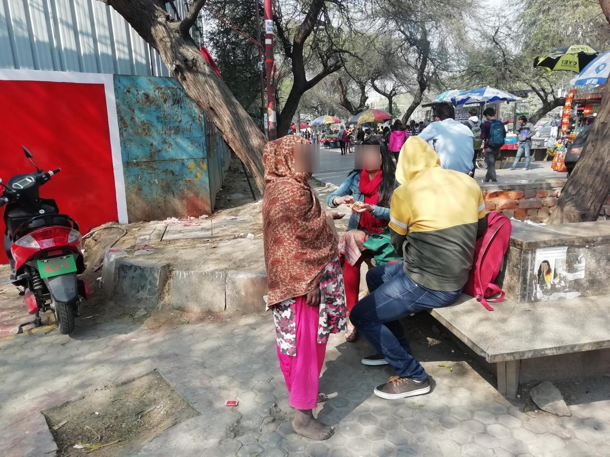
Tapri-Centric Sociality in 2020
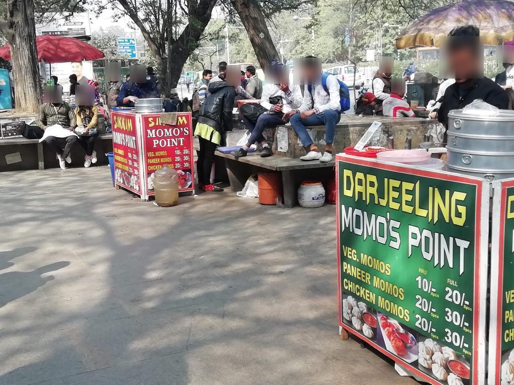
By 11:30, as the pavement dried, the stalls (Figure 5) filled up: a couple sitting on the slabs adjacent to a stall moved towards the corner, a group of students at the front, four elderly men in the middle of an argument about politics that had been going on for at least twenty minutes. The couple moved gradually closer over the next several minutes. The students, laughing and talking over one another, took no notice of them. The elderly men glanced at them more than once – I could not tell whether with disapproval – then returned to their argument. No one said anything to the couple.
When a group of office-goers finished their tea (Figure 6-2), each insisted on paying, until one pressed the money into the stall vendor’s hand first. The students nearby split their bill (Figure 6-1), each paying for their own. It was a small contrast in what a shared cup of tea seemed to obligate, which I noted here without reading too much into a single morning.
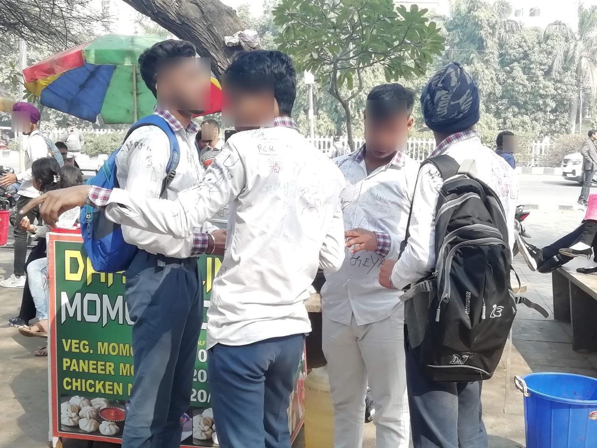
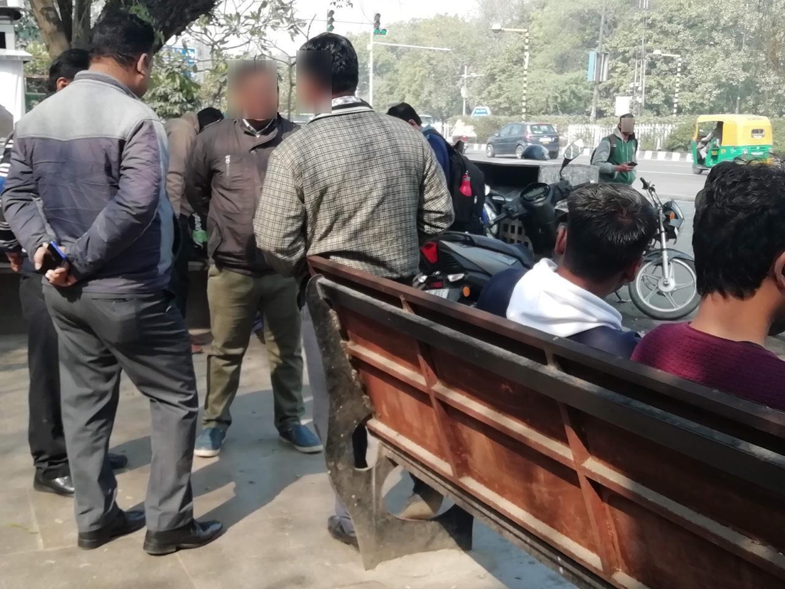
A man and a woman in their mid-twenties arrived soon after, cigarettes lit, mid-conversation – colleagues, perhaps, from the way they talked. An elderly woman passing by cast what appeared to be a disapproving glance at the woman smoking; however, no one else appeared to notice.
At 11:58, the stall was almost empty. One middle-aged woman remained, talking with the tapri/stall vendor about the morning’s poor sales due to the rain. The vendor explained that her phone had switched to English by accident and that she was unable to change it back. The customer helped her restore the Hindi language setting, and they carried on talking.
Pani (2020) discusses how rituals and routines contribute to the making of the city. Butcher and Harris’s (2010) ‘pedestrian crossings’ – points where unfamiliar bodies must share space whether or not interaction follows – describe something close to what I saw outside the metro station at the exit gate: a couple, an argument, a woman smoking and a disapproving glance occupying the same few square metres, with no one asked to leave.
Returning in 2026
Between 2020 and 2026, the pavement outside Exit Gate 4 was redeveloped by the Delhi Metro Rail Corporation. The informal stalls have been replaced by glass-fronted, air-conditioned eateries (Figure 7), and the rickshaw parking by formal bike-parking bays (Figure 8). What follows below rests in relation to the 2020 observations described above.
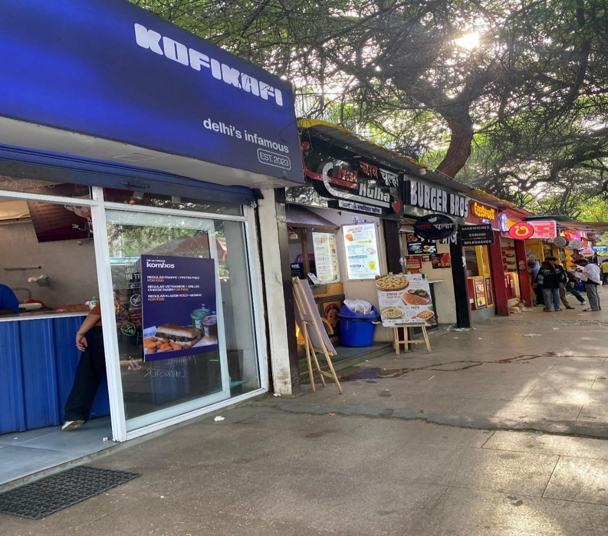
The drivers’ calling, the first sound the 2020 notes recorded, has survived the redevelopment, though not in its old form. The patch of pavement where e-rickshaws once crowded around Gate 4 is now marked out as formal bike-parking bays. On my visits, the rickshaws instead stood in a single line along the road, running from Gate 4 to Exit Gate 3, rather than swarming around commuters at the foot of the steps as they had in 2020. Yet as each train emptied, drivers still called out college names, working from their places in the line.
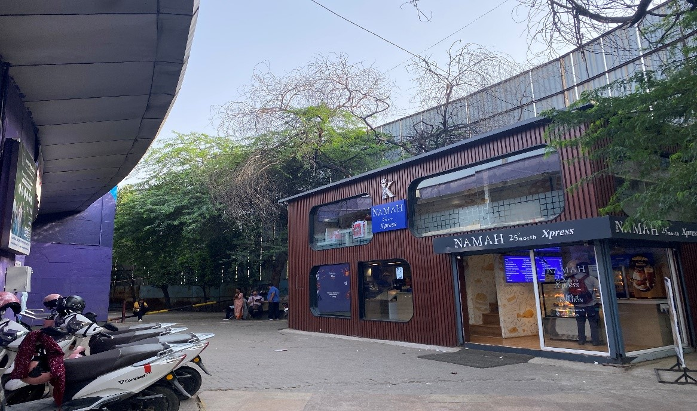
The encounters recorded in 2020 have likewise shifted rather than stopped. The open pavement where the cleaner met the dog, and where a chapati passed between strangers, is now largely taken up by shop frontages (Figure 7) and parking bays (Figure 8). On my visits, alms-seekers and dogs were still present, but at the gate’s edges or across the road near Exit Gate 3 rather than directly outside Gate 4. What has changed is less whether such encounters happen than where they can.
The tapri itself has made the most complete move. The tea stall now stands, tarpaulin and benches included, on the pavement outside Exit Gate 3 (Figure 9-1 and Figure 9-2), where on my visits after architectural reorganisation in 2026, it drew a similar mix of people: students, university staff, rickshaw drivers between fares and people asking for alms. At Gate 4, the shade the tarpaulin once gave – where anyone could sit for hours without buying anything – now belongs to the eateries, where sitting depends on being a paying customer. On rainy days, several of my colleagues and I now use Exit Gate 3 instead, for the shelter that Gate 4 no longer offers.
The eateries also set different terms of conduct. On a weekday afternoon, while having a burger and Diet Coke in one of the new eateries, I noticed a group of students celebrating a birthday there, cutting a cake and singing. They were asked to leave by the staff because of the noise. During my visits to the relocated tapri (Figure 9-2), similar sounds – students singing or a loud argument – drew glances but prompted no requests to leave. This is one incident, but it suggests a difference in the character of these spaces and in who sets the rules: management at the more rigidly regulated eateries, and the people sharing the pavement at the more flexible, democratic tapris.
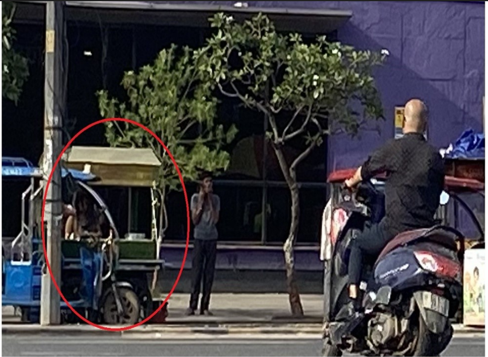
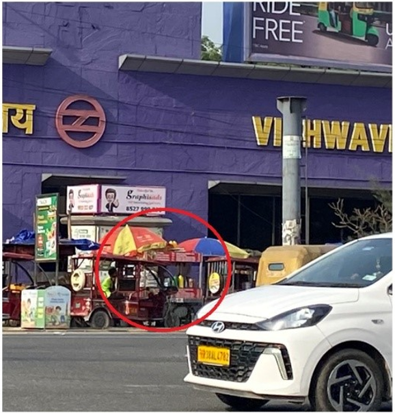
Conclusion: Displaced, Not Deleted
Six years on, the scenes documented here – the drivers’ calls, the shared chapati, the cleaner and the stray dog, the couple at the tapri – could not unfold in the same way at the same spot. As described above, the change appears real but partial: the eateries, the formal parking and the moved stalls have reordered a threshold once loosely shared, while some of the practices it held have moved across the road or to its edges, wherever the redevelopment has not reached. Not everything moved with the stall. The free shade and seating at Gate 4 have not been replaced there. For those who cannot pay for a seat, the redevelopment has meant a walk across the road and less choice about where to wait out the rain.
These notes cannot say how far this pattern holds at other stations, or what the redevelopment has meant for the vendors and drivers themselves, whose accounts a longer study would need. What they can record is one threshold, seen closely on one morning and revisited after it was rebuilt. At this gate, at least, the neoliberal redevelopment has displaced the ordinary city rather than completely erased it – still visible to those who know where to look.
References
Butcher, M. and Harris, A. (2010) ‘Pedestrian crossings: young people and everyday multiculturalism’, Journal of Intercultural Studies, 31(5), pp. 449–453. https://doi.org/10.1080/07256868.2010.513080.
Emerson, R.M., Fretz, R.I. and Shaw, L.L. (2011) Writing Ethnographic Fieldnotes. 2nd edn. Chicago: University of Chicago Press.
Ghertner, D.A. (2015) Rule by Aesthetics: World-Class City Making in Delhi. New York: Oxford University Press.
Haynes, W. (2025) ‘Station to station: arriving at a crucial space in urban geography’, Geography, 110(3), pp. 120–127. https://doi.org/10.1080/00167487.2025.2558437.
Pani, S. (2020) ‘Navigating the city: rituals, routines and relationships in the making of Delhi’s ordinary streets’, Astrágalo, 27, pp. 117–134. https://doi.org/10.12795/astragalo.2020.i27.09.
Robinson, J. (2006) Ordinary Cities: Between Modernity and Development. London: Routledge.
Author Bio
Debanjana Ghosh is an urban sexualities scholar who decodes the urban through the lens of everyday life and sexuality. Her research lies at the intersections of gender and sexuality, Southern urbanism, and everyday geographies, challenging violence-centred readings of urban India. Hailing from a non-metropolitan city and having lived in Delhi as a migrant woman for over a decade, her empirical everyday experiences inform her research interests and approach. Grounded in a queer-feminist lens, her ongoing PhD investigates how women across socio-economic classes subvert their everyday spaces of home, workspace, public spaces and digital space through carving out “spaces of sexual possibilities” in Delhi. Her work examines how women’s desire, intimacy, and sexual agency shape everyday urban life in the Global South.
Recommended Citation
Ghosh, D. (2026) ‘Sounds, Strangers and Stalls: Vignettes of the Displaced Ordinary Everyday at Delhi Metro’s Exit Gate’, Everyday Life: International Journal of Public Culture, Art and Design, 1(1), pp. 1–12.
Article URL: https://articles.everydaylifejournal.uk/articles/field-notes/sounds-strangers-and-stalls/
Copyright
© 2026 The Author(s). Published by Everyday Life: International Journal of Public Culture, Art and Design. This is an open-access article distributed under the terms of the Creative Commons Attribution-NonCommercial 4.0 International Licence (CC BY-NC 4.0), which permits non-commercial use, distribution and reproduction in any medium, provided the original work is properly cited. Everyday Life is an independent open-access journal with no submission or publication fees.